Experimental evolution reveals distinct flagellar strategies for enhanced motility in complex environments
Navish Wadhwa
Arizona State University
@WadhwaLab
Work by Seiga Yanagisawa
Dr. Seiga Yanagisawa
Postdoctoral Researcher, Wadhwa Lab
Bacteria swim by rotating helical flagella
 Slowed down 20X
Slowed down 20X

Reversing flagellar rotation changes swimming direction

Bacteria don't live in buffer


Their world is viscous, crowded, and structured
What tunes motility in viscous, structured environments?
Experimental evolution selects for enhanced motility in soft agar


Experimental evolution rapidly enhances motility in soft agar
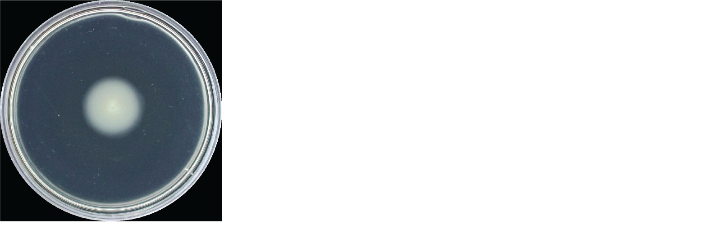
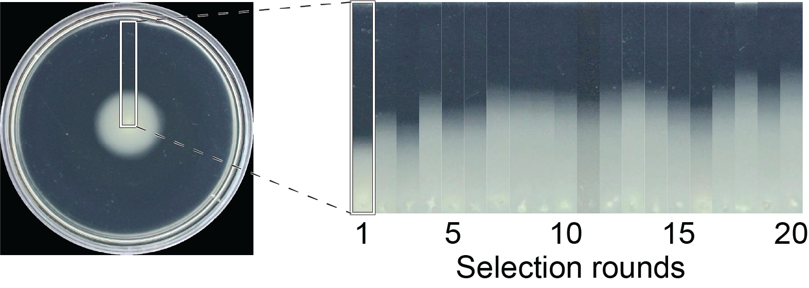
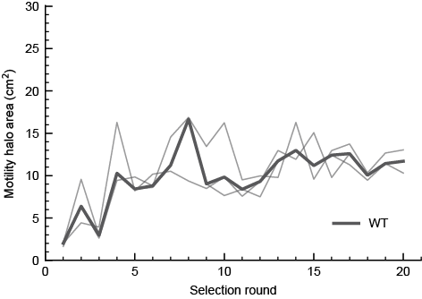
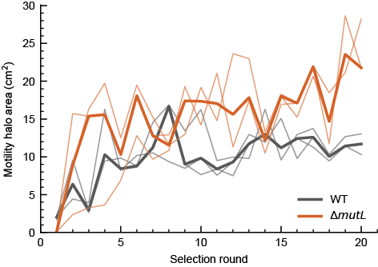
It's not just faster growth
Evolved lines don't grow faster
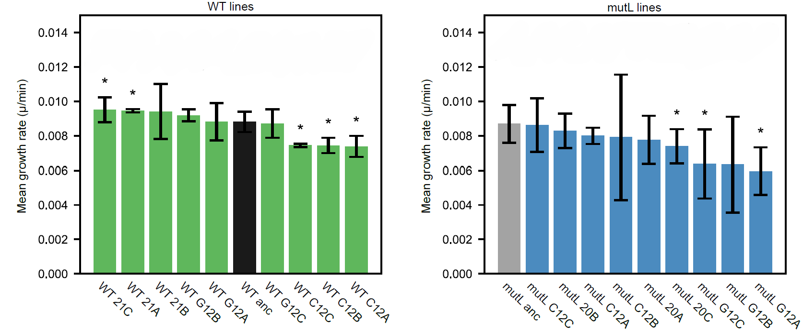
Swimming speed in liquid does not predict motility in structured environments
Single-cell tracking in liquid

Mutant A swims faster, Mutant B swims slower. Yet both make larger halos
Selection drives morphological changes

Evolved cells differ in flagellar number and filament shape, pointing to two routes
Mutant A has more flagella

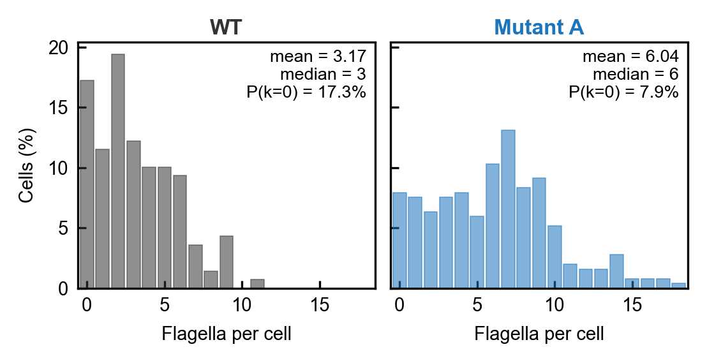
More flagella improve motility in soft agar

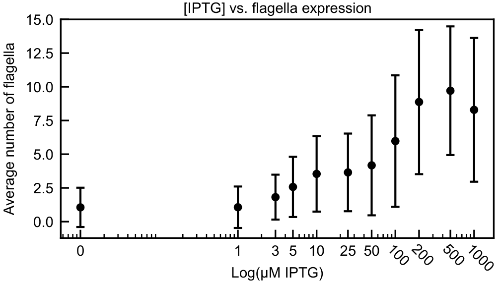
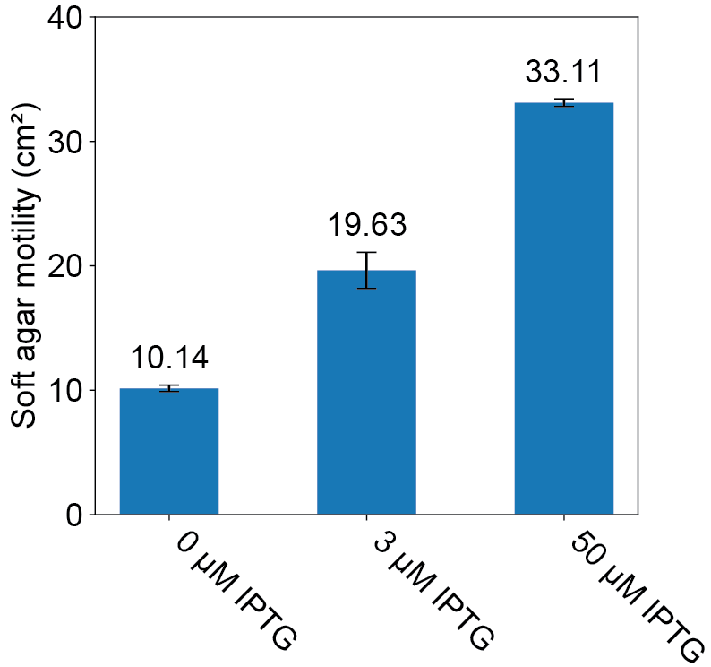
Ptac strain courtesy of Victor Sourjik
More flagella improve motility in soft agar


The optimal flagellar number depends on viscosity
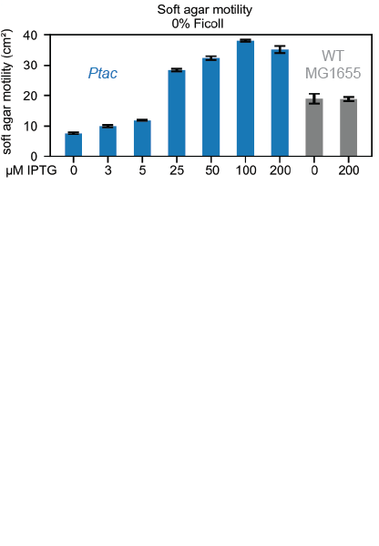
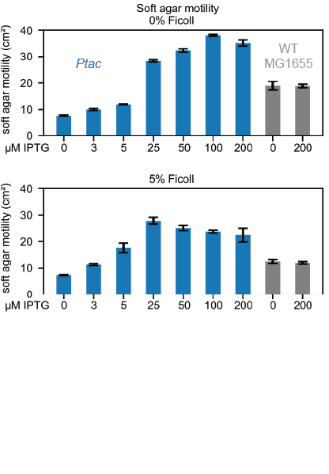
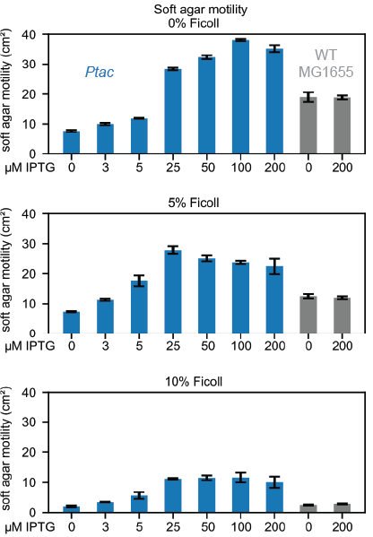
More flagella help motility in structured environments,
but the benefit depends on viscosity
Selection drives higher flagellar curvature

A single flagellin mutation increases curvature and motility


A438V swims slower in liquid yet migrates better in agar
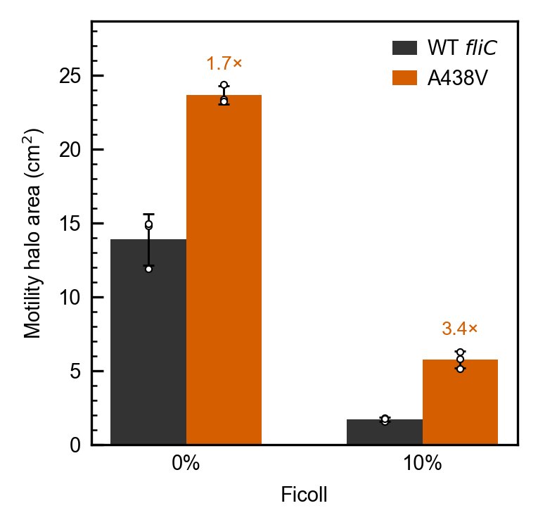
Mutant filaments undergo dramatic shape changes


Mutant filaments undergo dramatic shape changes


A structural switch within the flagellar filament
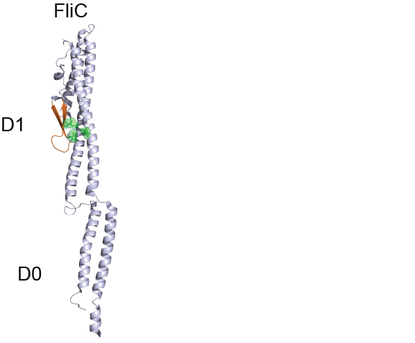
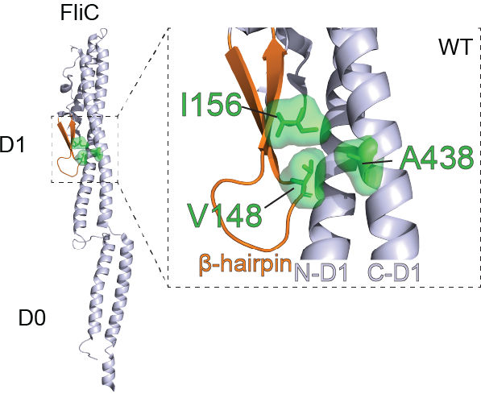
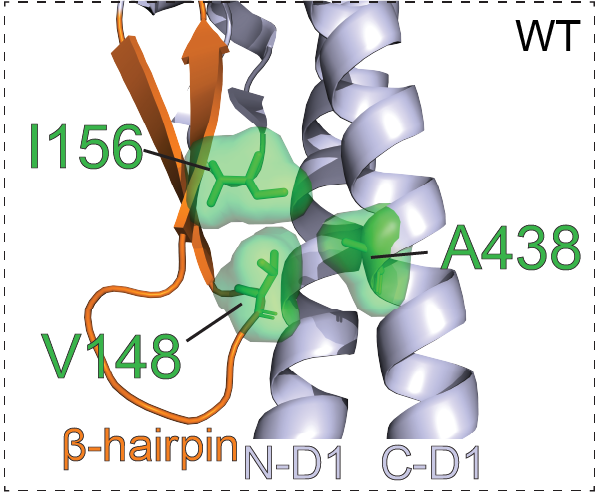

A structural switch within the flagellar filament
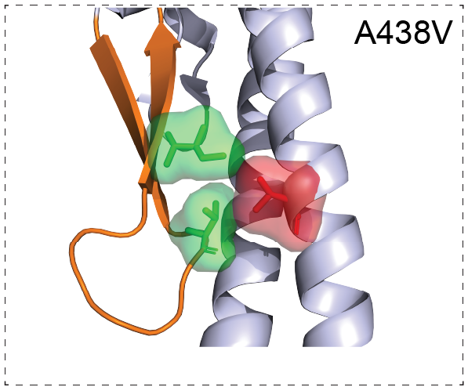

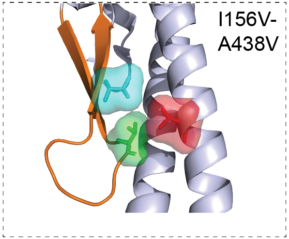

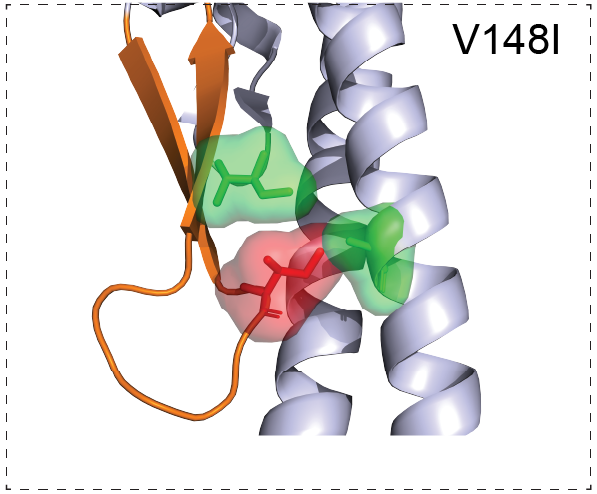

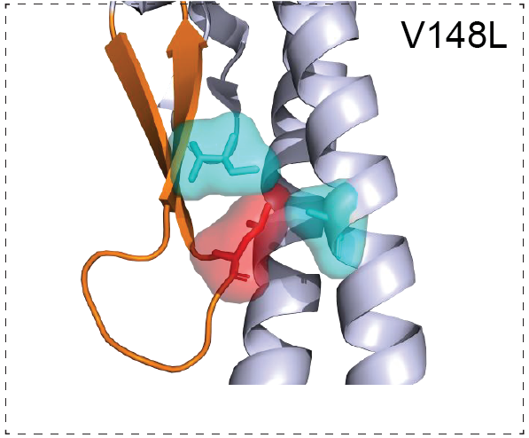

A structural switch within the flagellar filament

A structural switch within the flagellar filament

Summary
Bacteria rapidly evolve improved motility.
Flagellar number and morphology both influence motility in complex environemnts.
A structural switch within the flagellar filament.
WT fliC
A438V
Acknowledgements
Wadhwa lab
Dr. Seiga Yanagisawa
Dr. Mrinmayee Bapat
Dr. Farhad Javi
Shabduli Sawant
Eric Dudebout (now UofA)
Luis Meneses
Brennen Wise
Collaborators
Victor Sourjik (MPI Marburg)
Doug Shepherd (ASU)
Wayne Frasch (ASU)
Banu Ozkan (ASU)
David Blair (University of Utah)